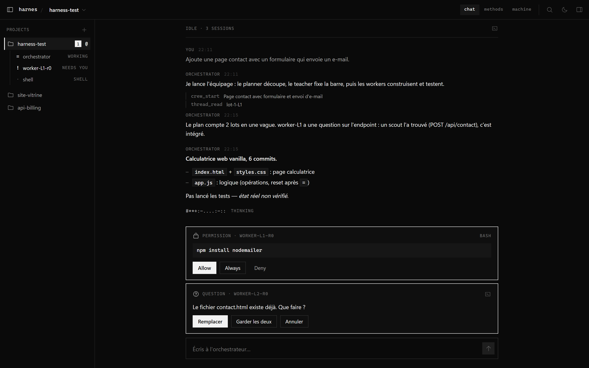
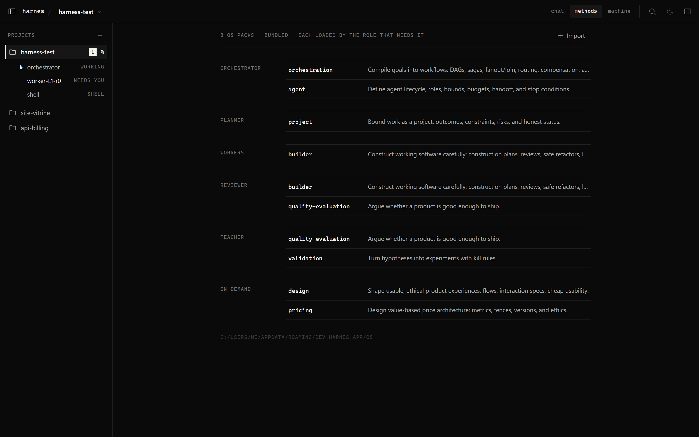
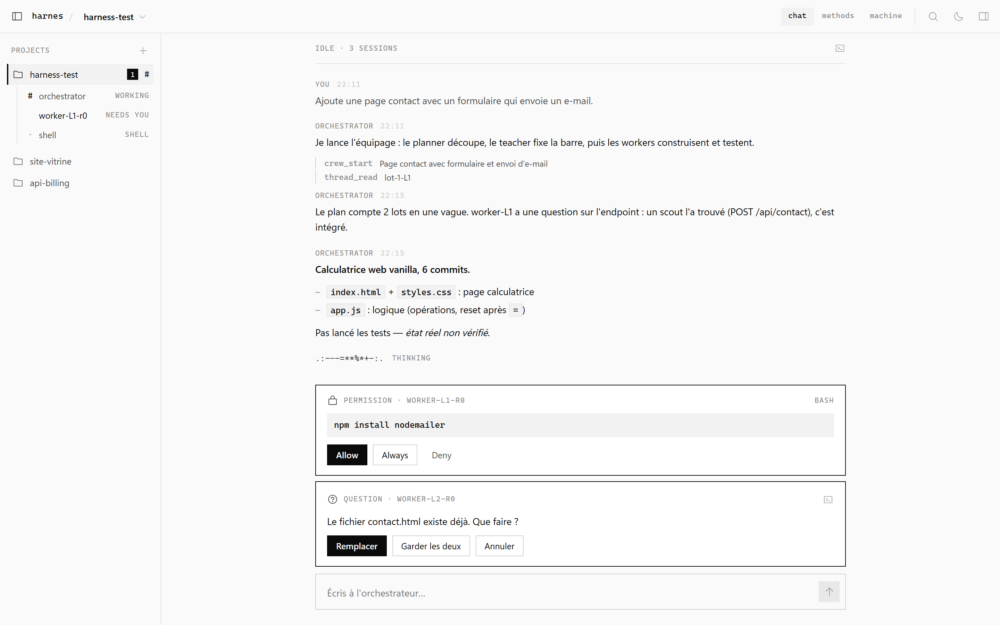

Orchestrator Opus · medium
Transforme votre message en une consigne complète et lance le run. Il répond lui-même aux questions rapides.
- Outils
- crew_start · crew_status · scout · os_route
- Laisse
- .harnes/runs/<id>/
harnes est un cockpit de bureau pour agents de code. Vous parlez à un seul orchestrateur ; il planifie, répartit, teste, et ne revient que lorsque la barre est atteinte.
Permission · worker-L1Bash
npm install nodemailer
ready for you · teacher bar met
Ajoute une page contact qui envoie un e-mail : 2 lots, e2e réussis, revue PASS.
Add contact page with formL1 · 3 files
Send contact emails with nodemailerL2 · 2 files
rien n'est commité sans vous



La transcription de l'orchestrateur en chat : du vrai Markdown, une ligne par appel d'outil, le run sur une ligne de texte.
Windows 11 avec Rust, Zig, Node via nvm et Claude Code connecté. Rien d'autre à installer.
Compiler
git clone https://github.com/sha-riyat/harnes
cd harnes/app; npm install
npm run appharnes-ctx compilé
harnes-e2e compilé
tauri dev · s'ouvre sur un chat vide
Ajouter un projet
+ projects
C:\work\calculator.claude/agents/ 6 rôles écrits
.mcp.json harnes-ctx, harnes-e2e
proxy sur 62346 · 24 packs OS indexés
Dire quoi construire
Ajoute une page contact
qui envoie un e-mail.ready for you · barre atteinte
Add contact page with formL1
Send contact emailsL2
vous testez, puis validez les commits
Chaque run suit la même route. Choisissez un arrêt pour voir qui y travaille, avec quoi, et ce qu'il laisse derrière lui.
CHANGES ou pas prêt : retour aux workers, pour un nouveau tour
Transforme votre message en une consigne complète et lance le run. Il répond lui-même aux questions rapides.
Découpe la tâche en lots et en vagues. Deux lots d'une même vague ne partagent jamais de fichier : les workers ne se gênent pas.
Fixe la barre avant tout travail : les critères, la preuve exigée pour chacun, et quand vous impliquer.
Chacun lit le fil de son lot, ne touche que ses fichiers, puis écrit et lance son propre test de bout en bout.
Lance chaque spec dans un vrai navigateur. Les étapes déjà résolues sont rejouées depuis le cache, sans appel au modèle.
Lit le diff face au plan et aux vrais résultats de test. PASS continue ; CHANGES repart vers les lots.
Confronte les résultats à sa propre barre. Prêt : c'est pour vous ; pas prêt : retour aux workers.
Lisez le résumé et les commits proposés, un par lot. Testez vous-même, puis validez.
Chaque rôle peut envoyer un scout (Haiku · high) pour une courte mission : trouver du code, résumer un fichier, lancer une commande.
idle · 3 sessions plan --- bar --- w#rk ·:=+· review
orchestrator
Calculatrice, 6 commits.
– index.html + styles.css : la page
– app.js : opérations, remise à zéro après =
crew_start Page contact avec formulaire et e-mail
thread_read lot-1-L1
permission · worker-L1-r0 bash
npm install nodemailer
AllowAlwaysDeny
question · worker-L2-r0
contact.html existe déjà. Que faire ?
RemplacerGarder les deux
Écrivez à l'orchestrateur… ↑
Open source, MIT. Windows 11 avec Rust, Zig, Node via nvm et Claude Code connecté. Codex, Gemini CLI et OpenCode peuvent tenir n'importe quel rôle.
Le cloner sur GitHub